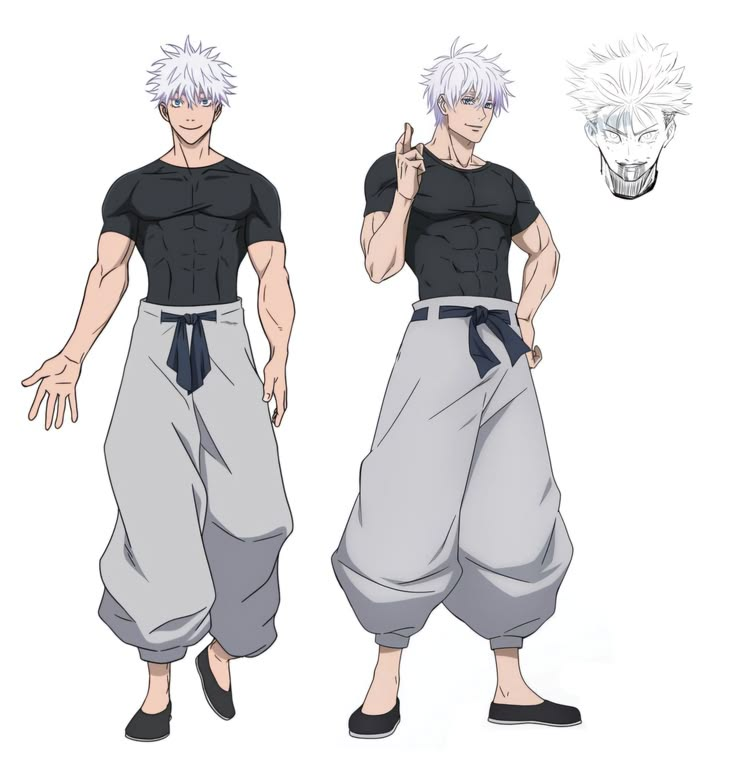
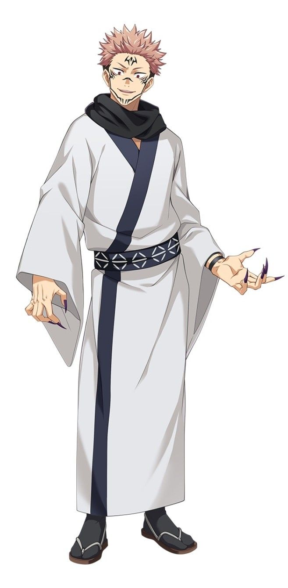
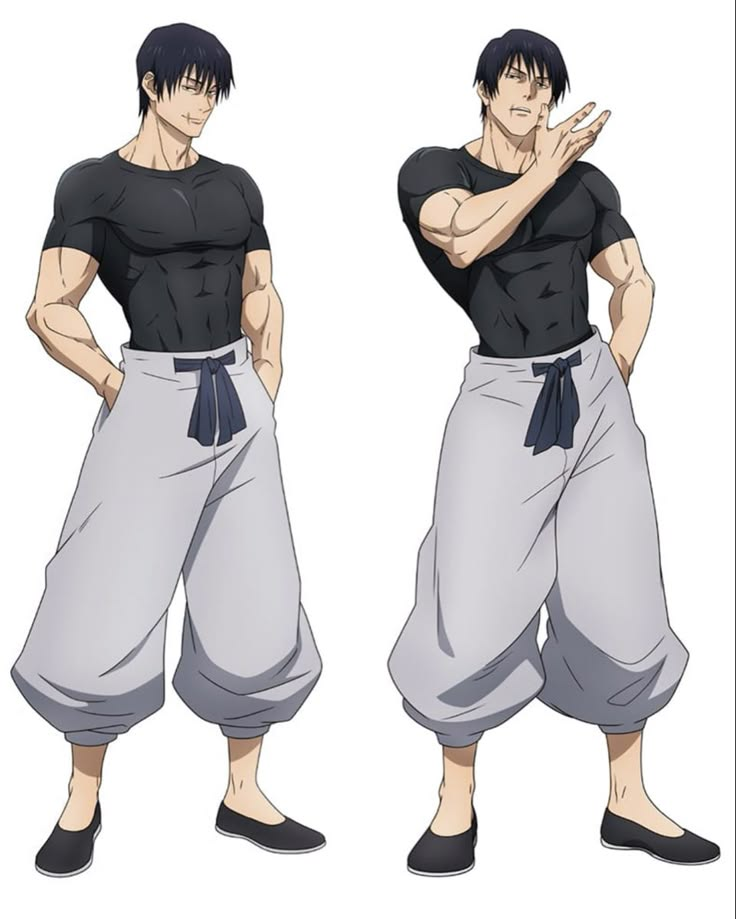

Bem-vindo ao armazém de imagens dedicado a Jujutsu Kaisen. Aqui, você encontrará uma coleção cuidadosamente organizada com artes e imagens representativas do universo da série.
Galeria de Imagens

Satoru Gojo em uma pose casual, vestindo roupas simples de treino que destacam sua postura relaxada, mas confiante. Uma expressão despreocupada e o cabelo prateado característico.

Ryomen Sukuna em sua forma majestosa, usando um traje tradicional que combina elegância e poder. A expressão imponente e os detalhes de suas roupas destacam sua posição como o "Rei das Maldições".

Toji Fushiguro em uma pose forte e intimidante, vestindo roupas de treino que destacam seu físico atlético. Sua expressão séria reflete sua determinação e habilidade em combate.